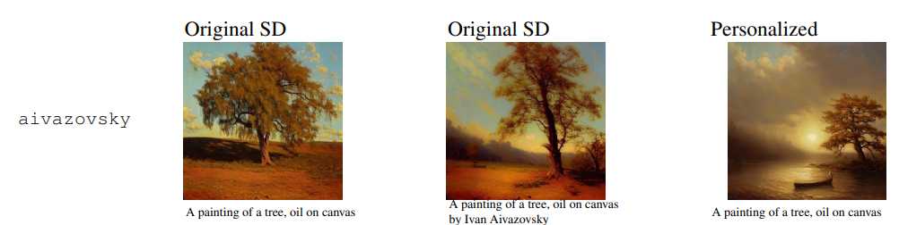

1 Intro
The sixth post from a series of posts about my Masters project with the Physics Department at Durham University.
2 Meeting
2.1 During the meeting we discussed:
- There’s a webinar “Statistical Methods Seminar Series” by the Ecological Forecasting Initiative on 7th November. It’s mainly in R, but might be worth attending regardless.
- In the Stable Diffusion prompts, instead of just the bird name, it could be better to state the type of sound its creating, e.g. “dawn song”. Actually this further motivates my approach, because having the flexibility to create custom training data with these niches included could greatly improve model training. Normally training just ignores the type of song and just separates by species. If a model could the training data to incorporate the type of song too, it could be better. For a soundscape, a model could first try and predict the type of song, and use that to better inform the type of bird.
- Found a blog about the difference between spectrograms and sonograms. Essentially they’re similar, but sonograms refer often more to Medicine, both are used interchangeably, I.E, you could refer to a spectrogram by saying sonogram in scientific literature. https://bioacousticsprocrastinator.blogspot.com/2014/10/spectrogram-vs-sonogram.html
- Questions about the information lost or possible to deduce from spectrograms.
- For a stereo recording, if an event occurs, say a tree falling and making a sound, can you find the phase difference between the two signals?
- For a stereo recording, if an event occurs, say two signals passing through the same point at a different time, can you find the time difference? A brief estimate gave a 10ms time difference, which should be possible to deduce from a spectrogram, even at low sampling rates.
- To be able to deduce this ms time difference, the spectrogram window size(s) must be small enough.
- For a spectrogram, as the sampling rate decreases, the frequency band ends up being smeared out. It’s like an uncertainty principle. Increased time resolution decreases the frequency resolution.
- Stuart advised making your own Python code to do spectrograms instead of using others’. However, not recreating certain things like .fft because they are too difficult.
- Fourier transforms in Python are easy. Say you have an audio file A(t). A(t).fft() Fourier transforms it, but then you need to shift it back to get it in the middle because .fft() also shifts it.
- As practice, try to .fft a sign wave and make a spectrogram.
- Now use two sign waves, and look how their frequencies look on the spectrogram.
- Also, there is an app we demoed, Spectroid. It makes spectrograms in real time. Stuart whistled and we could see it clearly. Try and recreate it’s function.
- We talked about the assessment:
- Well made and explained figures are really important. Never go below font 10/9 on figures. They shouldn’t be much smaller than the main text. A lot of Physics department specific criteria like figure creation and reference style you need to learn.
- Make the 10 page report in a way to get the most useful feedback from it. Make it contain a little bit of each section so you can get critic on them. The department says that you might write and use your 10 page report for the start of your diss but Robert says this most often isn’t the case.
- About the project:
- Before I can train a Stable Diffusion Model on spectrograms, first I need to properly learn about and decide how to create the spectrograms.
- Until the term ends, try and create deliverables that we can store so there’s less pressure later and I can be more exploratory.
3 Week Roundup
This week I evaluated how to do my stable diffusion spectrogram generation approach, including the different subtasks and finetuning. I investigated three different fine-tuning techniques: Textual inversion, Dreambooth, and Aesthetic Gradients. Including (briefly) how they work and their limitations. I then tried to deploy/implement them using an online service (Paperspace) and my own machine. Lastly, I looked over some papers kindly sent from Robert, the highlight being “Computational bioacoustics with deep learning: a review and roadmap”, a literature review covering the state of the field of my interests: using computational methods in bioacoustics.
4 Project Overview
The final aim is to use stable diffusion to generate labeled spectrograms of soundscapes. However, this task is too difficult to approach immediately, so we will start by considering the different stages of the problem.
First there is a difference in generating spectrograms of birdsong and generating spectrograms of entire soundscapes. The latter is a much harder task. I am unsure whether the model training process for both problems is the same, but regardless, trying to solve the former task first makes sense in order to see whether it can be done reliably enough to move onto the latter. If I can’t reliably generate spectrograms of individual birds singing, then there is little chance to reliably generate a spectrogram of an entire soundscape.
There is also the issue of training data. The full soundscape model must be able to generate environmental sounds too, so should be trained on them. Since I’m going to start with just generating spectrograms of birdsong, this will be ignored for now.
I can either finetune a ‘regular’ pretrained model, or train one from scratch. By ‘regular’, I mean a model trained to generate images of ‘normal’ things such as people, objects, animals, etc, not of a spectrogram, which is very specific.
4.1 That leaves four possible combinations:
- Finetuning a regular pretrained model on only birdsong to generate only birdsong.
- Finetuning a regular pretrained model on birdsong and environmental noise to generate environmentally noisy birdsong.
- Training a model from scratch on only birdsong to generate birdsong.
- Training a model from scratch on birdsong and environmental noise to generate environmentally noisy birdsong.
The idea of my entire approach is that the second and fourth combinations can be used/adapted to create entire soundscapes.
As an example, if a prompt was “A American Robin singing in a forest environment” to generate a spectrogram, the model would also be able to generate a soundscape spectrogram from the prompt “A American Robin singing in a loud forest environment followed by a American Goldfinch singing in a quiet forest environment”.
The first thing I will attempt is the first combination. It is very questionable whether a normal pretrained model can be finetuned to generate spectrograms as spectrograms are radically different to normal images. To do so, we first must consider what method to finetune a pretrained model with.
5 Different methods of finetuning pretrained models
There are multiple techniques to finetune a pretrained stable diffusion model. The field is not yet mature enough to objectively define the best one with all the advances and possible permutations of each technique. This is especially correct given that different approaches may be better for different tasks.
I have used the term ‘finetuning’ loosely to mean adding data of a new subject to a model to allow the model the ability to generate images of said subject. In actuality, fine-tuning refers to a specific technique. However, colloquially people refer to all the different techniques as finetuning. I will do the same, but take care to specify the particular method in question.
Below are some common techniques for finetuning. In reality, their complexity is a lot higher than is described, but for now we avoid becoming bogged down in the detail.
5.1 Finetuning
We take a pretrained model, cut off its head (the last node: the output node), and create a new head. We then finetune the whole model with new data: our own images and captions. This makes the new head produce outputs deliberate for our interests.
5.2 Textual inversion
Textual inversion (TI) is a special type of finetuning. The process is to create a new model embedding for some concept we want in some new data we have. For example, we have watercolour-styled images and we want the model to learn how to generate styled images.
We start by adding a new token, ‘watercolour’, with a corresponding new embedding to our text model. Then we train the new embedding on our watercolour images. Once the model has been trained, it ‘knows’ what watercolour means. Now we can write prompts with it as we please. For example: “Woman in the style of watercolour”.
An embedding is a store of relations between images and words in the CLIP subsection of our stable diffusion model. Simply put, it’s how the model stores knowledge to ‘know’ what words are associated to what images. For textual inversion, we create a new embedding and train the model so that it ‘knows’ what watercolour ‘means’.
A token is easiest understood to be a written word that corresponds to a embedding. In the prompt “Woman in the style of watercolour”, watercolour is a token and we trained a corresponding embedding for it.
5.3 Dreambooth
Dreambooth is similar to textual inversion. Instead of making a new token/embedding set, it finds an existing token/embedding set that is barely used, then finetunes it with our new data. This works because some token/embedding sets are rarely used in prompts as an artifact of how they are created.
5.4 Aesthetic Gradients
Aesthetic Gradients (AG) is different to the previous techniques because it allows you to generate your own style without finetuning or needing large computation. Both textual inversion and Dreambooth are intended to add the ability to generate new objects. In contrast, AG is designed to implement the ability to create new styles, not new objects.
5.4.1 AG Example
The AG paper at https://arxiv.org/pdf/2209.12330.pdf gives some examples of the difference between original Stable Diffusion (SD) and Stable Diffusion with AG. The examples showcase AG’s ability to generate desired new styles of images.

We want our model to create a painting of a tree that looks like it was drawn by the artist Ivan Aivazovsky.
The first image is original SD creating an image just with the prompt “A painting of a tree, oil on canvas”. There is no link to Aivazovsky in it.
The second image is original SD creating an image with the modified prompt “A painting of a tree, oil on canvas, by Ivan Aivazovsky”. We have trained original SD on 5 paintings by Aivazovsky using the SD’s default training mechanisms. Notice how it is only slightly changed.
The third image is AG implemented to SG. With only 5 paintings it had dramatically changed the style of the image. Notice that the prompt is unchanged from the first image’s: “A painting of a tree, oil on canvas”.
The paper also shows other examples where instead of 5 paintings (images) of the new style, it uses 100. The trend is still the same: using SD to append the style keyword to the prompt has little effect compared to using AG to imitate a given style.
5.4.2 AG Discussion
We could use AG to implement a ‘spectrogram’ style to our images. This would simplify prompt creation because we would no longer have to specify the style using a keyword. Furthermore, it appears that AG is better at changing a model to be able to implement dramatic shifts in style, and creating images of spectrograms is indeed a very dramatic shift.
One prudent concern about AG as a finetuning method is it’s prompt reduction method. In our example, all prompts we enter into our model now will be in the style of Ivan Aivazovsky. This could be an issue because say we want the same model to produce images in the style of another artist. We would have to start over and use a new model to do so. This is unlike the usual stable diffusion modified prompt method in which adding “by Ivan Aivazovsky” to any given prompt modifies the style of the generated image. With this method, we could use the same model to generate images in the style of many artists, not just one.
Instead of having one spectrogram style for all generated prompts. Perhaps we could make a style for each spectrogram of each species of bird, and each spectrogram of each type of environmental sound. AG might be incompatible for this approach.
To use AG, a user recently implemented it into his stable diffusion repository at https://github.com/AUTOMATIC1111/stable-diffusion-webui with discussion at https://github.com/AUTOMATIC1111/stable-diffusion-webui/pull/2585. This user in particular, AUTOMATIC1111, appears to implement new papers very quickly, so is worth following to see updates in the field. His repository has a plethora of papers and techniques implemented which are worth investigation.
The AG preprint paper was released 25th September. It is unlikely that mature research to use it to generate spectrograms has been done or even thought about.
Aesthetic Gradients can also be used not as an alternative but as an addition to Dreambooth or TI. A example is given here https://github.com/AUTOMATIC1111/stable-diffusion-webui/discussions/3350.
More information about AG can be found at a blog post https://metaphysic.ai/custom-styles-in-stable-diffusion-without-retraining-or-high-computing-resources/ and at the official author’s Github https://github.com/jmoraes7/stable-diffusion-aesthetic-gradients.
5.5 Limitations of finetuning
Naturally, the limitations are dependent on the approach specified. I will however write some general concerns:
5.5.1 Limitations:
- If a model has only been trained on some type of data there is no guarantee that finetuning it with new data will result in good results.
- Finetuning methods tends to be reliant on the specifics of this new data. For example, to finetune an image of myself it is best to give images of me in different poses and environments. Furthermore, the number of images given matters too.
- Finetuning can be computationally expensive. It requires too much computation for my laptop. To remedy this, I have been using an online GPU service called Paperspace. Regardless it still can takes hours to finetune a model even using a 30Gb GPU.
6 Which finetuning method to use?
When individuals evaluate how good a given finetuning method is, it is usually done in the context of finetuning normal images, not spectrograms. This makes it hard to apply much discussion done online. It is also extremely unlikely research on state-of-the-art finetuning methods specific to generate spectrograms has been carried out.
It might be more productive to skip focus on finetuning a normal pretrained model and simply focus on training a model from scratch on spectrograms. However, firstly there might end up a need for finetuning knowledge even on a trained-from-scratch model, and secondly, it is too big a oversight in research to simply entirely skip any attempt of finetuning a normal model.
For my purposes, I think it makes the most sense to test Textual inversion, Dreambooth, and Aesthetic Gradients myself. This will hopefully lead to some intuition or insight onto how finetuning works, particularly for spectrogram images. These TI and Dreambooth are the most wellknown, making them important to test for the readers’ sake. However, AG, because of its focus on creating styles and prompt simplification, as well as probable less computational effort, might be a great fit for spectrogram creation. It is for this reason that I spent this week trying to get it to work.
7 Deployment Options
There are there main ways to run computationally heavy models. On your own machine, on an online service such as Google Collab, Kaggle, or Paperspace, or on a (private) computing cluster/supercomputer. Because using a cluster/supercomputer will require specialised knowledge about Linux, as well as a formal request to the university, this week I have opted to investigate the former two.
7.1 Paperspace
Paperspace is an online service for a programming environment and GPU usage. This costs money depending the service: there are free limited options available, but paid options too. For testing, I paid to use the cheapest GPU available, a 30Gb P4000 for about 0.4$/hr. Thankfully I have some free credit from a fast.ai offer. It is worth noting however that Paperspace advises using a more expensive GPU is more cost effective for larger projects.
The first thing I tried was AUTOMATIC1111’s popular stable diffusion implementation. Paperspace themselves have a guide to do so at Paperspace have a guide at https://blog.paperspace.com/stable-diffusion-webui-deployment/.
The guide’s method of deployment is extremely limited. You cannot modify the files or implementation, making it impossible for me to install Aesthetic Gradients. However, it comes with Textual Inversion. It is also unable to use Dreambooth.
A reminder to myself is when I’m done with my session, to end it by changing the number of replicas from ‘1’ to ‘0’, to avoid wasting money.
A separate Paperspace implementation would be to use a ‘notebook’ instead of a ‘deployment’. This allows you control over all the files. I tried both the Windows installation instructions and the Linux ones for AUTOMATIC1111. The former didn’t won’t because of a permission error (I assume Paperspace doesn’t allow installation of third party programs for safety) and the latter didn’t work easily either.
Fortunately, I found a guide specifically for use on Paperspace notebooks. The installation this guide uses appears to be flexible. You can modify files so it should be possible to use Textual Inversion, Dreambooth, and Aesthetic Gradients. However, using this method could avoid spending money renting a GPU.
One such method of modifying the installation to include Dreambooth is detailed here: https://github.com/TheLastBen/fast-stable-diffusion.
7.1.1 Paperspace conclusion
Their official implementation guide of AUTOMATIC1111’s stable diffusion costs money, cannot be edited, cannot use Aesthetic Gradients, cannot use Dreambooth. I believe it can use textual inversion.
However, an unofficial guide appears to have the flexibility to use all three finetuning methods and can use free Paperspace GPUs so could have money.
Unsurprisingly, I prefer the latter.
7.2 Locally
My laptop is designed to run graphically intensive videos games so it was worth testing if I could do stable diffusion on it.
Stable Diffusion is recommended only for use with GPUs that have =>10gb of memory. My graphics card, an NVIDIA RTX 3050 Ti, only has 4gb of dedicated GPU memory. My PC has 12gb (total) GPU memory.
Total GPU memory (in windows) = shared GPU memory + dedicated GPU memory.
Shared GPU memory is half of your computer’s RAM.
Thus, for me, GPU memory is 16/2 + 4 = 12 gb.
Unfortunately, it appears that the memory from shared GPU memory is significantly slower than the dedicated memory. This results in a significant performance loss when the dedicated memory is all allocated and shared memory starts being used up.
As a result, it does not seem that I can run stable diffusion on my own machine. My dedicated memory of only 4gb (albeit also with plenty of RAM) is not enough pending some more thorough investigation of optimisation techniques.
When I tried generating images and/or using Aesthetic Gradients, I got a memory error like:
“RuntimeError: CUDA out of memory. Tried to allocate 20.00 MiB (GPU 0; 4.00 GiB total capacity; 3.43 GiB already allocated; 0 bytes free; 3.47 GiB reserved in total by PyTorch) If reserved memory is >> allocated memory try setting max_split_size_mb to avoid fragmentation. See documentation for Memory Management and PYTORCH_CUDA_ALLOC_CONF”
I tried a number of things to help this. I updated my drivers, moved my default browsing habits off Google Chrome, disabling hardware acceleration on my new browser, webui-user.bat to use –medvram, –lowvram, –always-batch-cond-uncond at command line.
None of these things allowed me to create an Aesthetic Gradient and generate an image with it.
7.3 Deployment Conclusion
I cannot easily use my own machine to do Stable Diffusion with Aesthetic Gradients, even just for small testing. It might be possible with enough VRAM optimisation, but regardless with be very slow. I don’t believe it’s worth the time and or effort to figure it out.
Instead, I’ll focus on using Paperspace or a service like it. My next step will be to properly implement AUTOMATIC1111’s unofficial paperspace guide which appears to create a implementation that has flexibility to use all three finetuning methods as well as free Paperspace GPUs.
8 ESRGAN (Upscaling) Models
ESRGAN are types of neural network models focussed on image and video upscaling. A good wiki for it is here:https://upscale.wiki/wiki/Main_Page, and AUTOMATIC1111’s stable diffusion implementation allows you to use them.
9 Another idea to do soundscape spectrogram creation
What if we created not images of soundscapes, but animations of them changing? We can create animations by giving a list of prompts and seeing the image change from one to another.
10 Reference Papers from Robert
Robert kindly sent me some potentially useful references. I had a brief look at them.
10.1 soundscape_IR Module
https://besjournals.onlinelibrary.wiley.com/doi/full/10.1111/2041-210X.13960
soundscape_IR is (the first) open-source Python toolbox designed for improving results in ML models by using unsupervised source separation (SS) in soundscape information retrieval. It contains a supervised algorithm too. To do so, it uses nonnegative matrix factorization.
This paper is useful because understanding soundscape separation techniques may lead to some insights into how to generate stable diffusion soundscape spectrograms. Papers like this indicate to me that I need to spend more time learning about computational linear algebra and the signal processing/the properties of sound. Thankfully, it being based in Python and open source means I can play around with it and learn these topics practically.
10.2 Computational bioacoustics with deep learning: a review and roadmap
https://peerj.com/articles/13152/
The paper is a recent (March 2022) overview about the growth of computational bioacoustics. This is exactly what I need to read: it covers how recent approaches are done bearing in mind all of the advances in various fields and methods (big data, signal processing, machine/deep learning, speech and image processing). As it’s a literature review, it will help a lot with writing my diss, as well as my motivation for using such a novel approach. Also, because deep learning is new to the field, it does well to explain it to people with a biology background, so is easy to understand.
It outlines the typical bioacoustic classification approach, which I had an implicit understanding of, but is nice to see outlined properly.
10.3 Typical Approach:
- Uses a common CNN architecture like ResNet, VGGish, Inception and MobileNet. This could be a pretrained model from Google’s AudioSet, (a dataset of manually annotated audio events of humans and animal).
- Uses spectrograms.
- They are usually divided into fixed lengths ranging from 1-10 seconds.
- Spectrograms as three types: standard (linear-frequency), mel, or log-frequency. There are more details about transformations.
- There is no strong consensus on the ‘best’ spectrogram format. Best being relative because it depends on the problem. Usually researchers decide empirically.
- The ML tasks are usually binary classification (e.g. is this sound in the spectrogram? Yes/No) or multi label classification (are any of these sounds from a list in the spectrogram?).
- Uses data augmentation to improve diversity of a small training dataset to be more diverse. Done using noise mixing, time shifting, mixup.
- Other than standard CNNs, a modification called CRNNs are relatively popular. You add a recurrent layer (LSTM or GRU) after the convolution layers.
- Train the model using the standard good practices in deep learning. Model variables varied include Adam, dropout, early stopping, hyperparameters. Reference paper given (Goodfellow, Bengio & Courville, 2016).
- Dataset is split as it usually is in machine learning: by training, validation and testing.
- Performance metrics used are accuracy, precision, recall, F-score, and/or area under the curve (AUC or AUROC).
- Bioacoustic datasets tend to be very unbalanced because some categories/classes have many more entries than another. This is why techniques such as macro-averaging are used. Macro-averaging calculates the model performance for each class and then takes the average of those to give equal weight to each class (Mesaros, Heittola & Virtanen, 2016).
- As a field, computational bioacoustics with deep learning is immature. There are few reference works. There’s a lot of interesting work to be done to adapt the typical (and fast progressing!) deep learning techniques to the specific requirements of bioacoustic analysis.
The author then comments that the standard recipe works well for many bioacoustic classification tasks, including noisy outdoor sound scenes, but heavy rain and wind remains a problem across all analysis/ML methods, including DL. Also, that while data augmentation of spectrograms is specific to the audio domain and computational bioacoustics, the field’s use of CNNs is a good idea because it follows the advances, practices, and research in CNNs used for standard DL tasks (images, audio, video).
The typical approach outlined makes a lot of intuitive sense to me; most of the process I have encountered before. I find it interesting that the field mainly uses a image approach for audio classification, not a direct audio approach. I’m not suprised that the field also doesn’t have a strong consensus on the ‘best’ spectrogram format and individuals decide empirically. This is unfortunately often the case in ML, especially as the field progresses too fast. Finally, it’s exciting that the field is immature because there’s some interesting work to be done!
10.4 Dataset synthesis/simulation (sim2real)
There’s a section on this. It’s very useful to see other approaches than mine!
sim2real in DL is the creation of synthetic datasets. Data augmentation is editing existing training data, sim2real is creating new training data. Because of this, if there are problematic biases in the training data, sim2real could have the ability to significantly reduce them as creating new data entirely rather than changing existing data is more flexible.
The issue is whether the synthetic data is as realistic as the real data. The author states three papers using sim2real, that their “results imply that wider use in bioacoustic DL may be productive, even when simulation of the sound types in question is not perfect”.
Two of these papers are very relevant to my end goal:
“Simulation is also especially relevant for spatial sound scenes, since the spatial details of natural sound scenes are hard to annotate (Gao et al., 2020; Simon et al., 2021).
Simulation, often involving composing soundscapes from a library of sound clips, has been found useful in urban and domestic sound analysis (Salamon et al., 2017b; Turpault et al., 2021). Such results imply that wider use in bioacoustic DL may be productive, even when simulation of the sound types in question is not perfect.”
10.5 Conclusion (for now)
This paper is extremely long as expected of a thorough lit review. It’s most definitely worth reading in depth.
It’s conclusion is that developments in DL, data availability, audio hardware, processing power, and demands of national and international biodiversity accounting will benefit Bioacoustics. However, the field must align these developments (especially in DL) towards their specific problems and needs. An example earlier being that CNN research has advanced in DL, but that data augmentation of spectrograms is specific to the audio domain and computational bioacoustics, so the latter must be investigated.
Reading this paper A: gives me an overview of the field. B: gives me ideas and knowledge on how to do my approach. C: gives me flexibility to find another approach in case my own doesn’t work out.
There’s many sections of this section indirectly important for me to properly understand. Some of it covers knowledge I’m missing, such as, “Acoustic features: spectrograms, waveforms, and more”, but others cover content I’m familiar with such as data augmentation and pretraining, just not in the context of bioacoustics.
Lastly, it also contains a section on Spatial acoustics, relevant to our previous approach using stereo data. This fits in case C above. Similarly, here is another paper about using an acoustic vector sensor (similar to stereo data) approach for sound separation. https://asa.scitation.org/doi/full/10.1121/10.0013505
10.6 Papers to motivate bioacoustic classification:
These two papers would be useful to motivate my approach. Better classification models means better bird density and migration information, means better biodiversity tracking.
On monitoring of flight calls based on artificial light at night (bird migration): https://onlinelibrary.wiley.com/doi/epdf/10.1111/ibi.12955#
On estimating the number of birds from audio data, a literature review: https://onlinelibrary.wiley.com/doi/epdf/10.1111/ibi.12944
11 Work Done:
- Almost finished fast.ai lesson 11.
- Worked on fast.ai lesson 9B, a mathematical description of Stable Diffusion.
- Found link on Stable diffusion tips: https://www.reddit.com/r/StableDiffusion/comments/yap62n/tips_tricks_and_treats/.
- Found link on helps with prompt creation https://openart.ai/promptbook/
- Paper on Neural Audio Compression https://arxiv.org/abs/2210.13438
- Guide on How to normalize spectrograms https://enzokro.dev/normalizingSpectrogramsPost.html
- Google team paper Multi-instrument Music Synthesis. Audio synthesis techniques may be useful for my stable diffusion spectrogram synthesis approach https://arxiv.org/abs/2206.05408
12 To do
(In list of priority) - Practice spectrograms and Fourier transforms in Python (and maybe also from those videos I found a new weeks ago). Get some plots to show at our next meeting. - “Statistical Methods Seminar Series” Webinar 7th November. - Fast.ai: finish lesson 11 and 12. - Read the Computational bioacoustics literature review (again). - Get AUTOMATIC1111’s stable diffusion to work on Paperspace to do fine-tuning. - Fast.ai maths lesson 9B has low priority because other things are much more tangibly important right now.